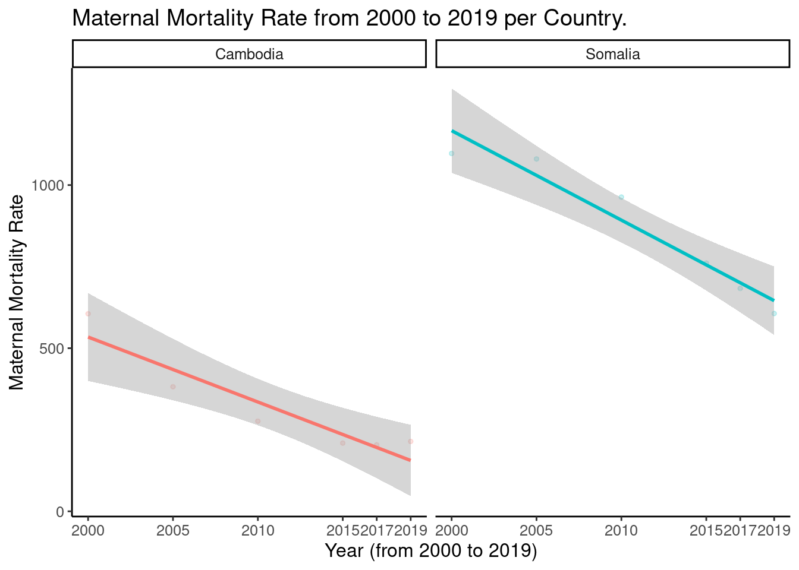

Coverage of Essential Healthcare Services.
Essential Healthcare Services Falling Behind in Sub-Saharan Africa and East-Asia
Global Map of Essential Healthcare Service Coverage: A Visual Representation of Disparities and Progress
Cambodia with the highest % increase in CEHS from 2000 to 2019 is still at 61 while Somalia with a 93% increase in CEHS is the lowest on the CEHS index with 27.
Bar Graph Showing Coverage of Essential Healthcare Services in Cambodia and Somalia.
In 2019, Cambodia has risen to 61 in their healthcare services with a growth rate of 221% and Somalia has risen to 27 with a growth rate of 93%. These are two countries with poor healthcare services in Africa and East-Asia.
Time Series Analysis of Essential Healthcare Service Coverage: Cambodia and Somalia.
Although the life expectancy rates in Cambodia and Somalia have shown improvement, both countries still lack access to quality healthcare services. Over the years, life expectancy has steadily increased in Cambodia, while in Somalia it has remained relatively constant until the rate of improvement began to accelerate in 2010. Despite these positive trends, both countries still face significant challenges in providing essential healthcare to their populations
Scatter Plot Analysis of Maternal Mortality Rate Across Cambodia and Somalia.
The maternal mortality rate from 2000 to 2019 per 100,000 live births of Cambodia and Somalia are experiencing a decline due to their poor performance in healthcare services. The major reason is due to lack of adequate, affordable and accessible health services, poor quality services, poor hygiene, a lack of skilled health staff, and harmful traditional practices. These factors are effecting the maternal mortality rate to be so high.
